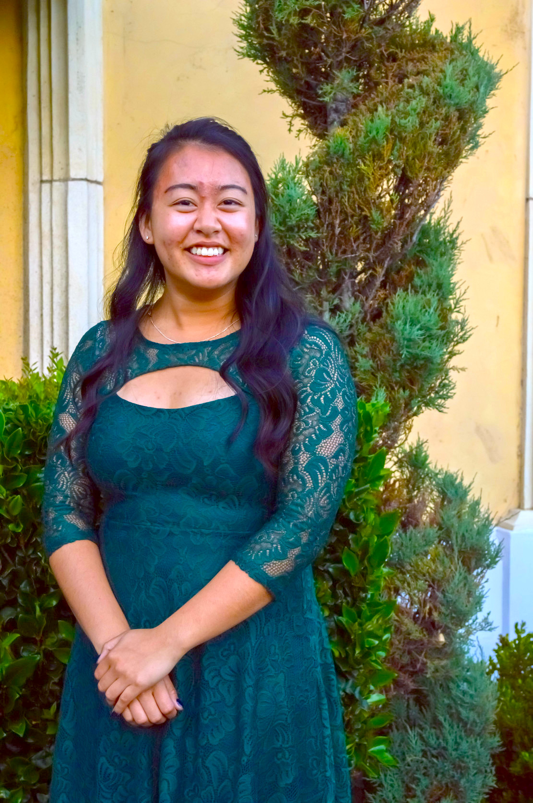
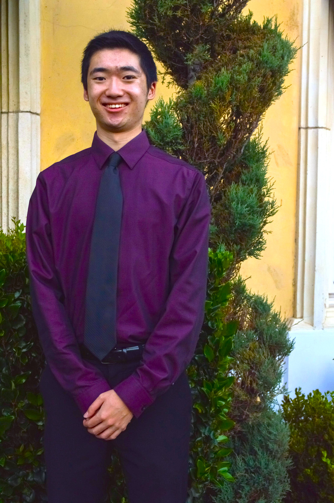
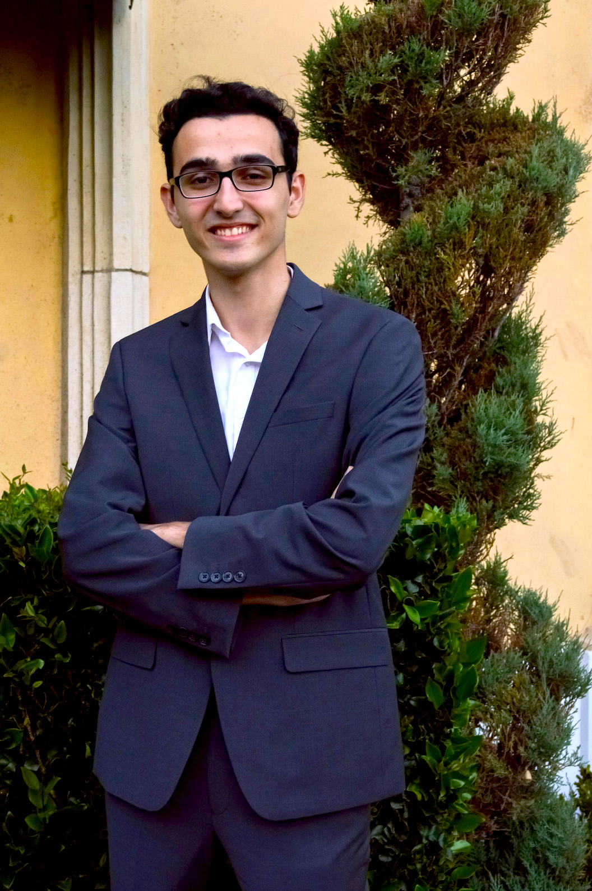

Hi all! I'm excited to be serving as your 2017-2018 president! As president, I'm here
to ensure that all of your needs are met. Outside of RSS, I'm an RA for Rieber Vista,
and I'm also interning at the UCLA Burkle Center for International Relations and at
GLAAD. I love food, graphic design, complaining about school, and everyone in RSS!
See you in the fall - I'm known for looking angry all the time, but please still say hi!
JUNY NGUYEN
president
Hey everyone! My name is Irena, and as IVP, I'm in charge of planning general meetings,
Winter Retreat, and Spring Banquet - get excited! Outside of RSS, I work on research, and
I've also interned at the NIH. I'm also really involved in the Learning Assistant program at
UCLA, so you might find me in one of your life science classes! Personally, you'll probably
catch me watching movies or talking about Disneyland. I'm excited to meet all of you!
IRENA ROY
internal vp
Hi everyone! I'm Jake and I'll be this year's Secretary. Besides helping out with the logistics
of the society, I write the RSS bulletin, a weekly email which brings you news of everything
that's going on in our organization. I'm also in charge of keeping score for our class points
war. Aside from all that, I'm a fourth year planning to go to law school. I hike and read - I
devour books of all kinds. I'm looking forward to meeting you soon, welcome to RSS!
JACOB TODD
secretary
Hello everyone! I'm Visesha, and I'm thrilled to be serving as your External Vice President
for RSS this year! I will be involved in planning this year's speaker events, including our
fall Zombie Talks and spring SPIEL! Outside of RSS, I volunteer at Ronald Reagan Medical
Center and in a stroke research lab, and am also involved in TimeOut@UCLA and the
Alumni Scholars Club. I love Netflix, eating, and exploring LA! I hope to meet you all!
VISESHA KAKARLA
external vp
Hi everyone! My name is Bryan, and as one of your co-Activities Directors, I'll be
organizing our social events, which range from BBQ's and sightseeing trips to yearly
traditions like Broomball, Kayaking, and our Bonfires. Outside of RSS, I'm a teaching
assistant with the Los Angeles Math Circle (LAMC). In my free time, you might find me
outside on a run or inside playing games. I'm excited to meet all of you!
BRYAN HU
co-activities

Bienvenida to the RSS family! My name is Lucia - and along with my co-director Bryan,
we'll be in charge of planning events like Fall/Spring bonfire, broomball, and more! Apart
from RSS, I do research on Huntington's disease, volunteer at the UCLA Medical Center,
and serve as a Resident Assistant for Sproul Landing. I'm a Disneyland and half-marathon
junkie, and love to watch sports, TV, and movies! Don't be a stranger - say hi!
LUCIA YANG
co-activities

Hellooo RSSers! I'm Jason, and I'm excited to be your Educational Programs Director!
I have a number of programs planned for you guys, from building your resume to faculty
mentorship! Apart from RSS, I organize health clinics in Mexico, research clinical strokes,
and help run a shelter for homeless students. In my free time, I play Tetris, stargaze at
Griffith Observatory and support the LA Lakers. I look forward to meeting you all!
JASON ZHANG
educational programs

Hi everyone! I'm Krista and I'll be your community service director this year! I will find fun
service opportunities for you all to be involved in, hopefully with your input! Service has
always been a big part of my life and I intend to make it an important aspect of RSS. I am
active in APHC, and I volunteer, shadow, and research in various projects at a hospital. I
enjoy reading, traveling, ice skating, longboarding, and more. Welcome to RSS!
KRISTA YANG
community service

Hi everyone! I'm Anika, and I'm excited to serve as your Treasurer for this year! I'm here
to ensure that everything runs smoothly financially. A little bit about me: I love being
outdoors, traveling, and watching movies and stand-up comedy. I'm an RA for Cedar Bluff,
and I studied physics abroad in Scotland! I'm participating in neuroscience research on C.
elegans and write for Humans of UCLA. Welcome to RSS, and cheers to a wonderful year!
ANIKA MAHAVNI
treasurer

Hi, my name is Daniel. As the communications director, I am responsible for developing
the Regents Scholar Society website - which is getting completely renovated this year!
I enjoy spending unjustifiable amounts of money on gadgets and hobbies such as audio equipment and desktop pc's - hit me up if you would like to play videogames!
DANIEL LI
Web Wizard
Hello everyone! My name is Kellie, and I am super excited to be your Publicity Director! I
hope you all are just as excited to get involved with the many RSS events I'll be promoting
this year! Besides RSS, I teach public health modules, work at health clinics in Mexico,
volunteer at the UCLA Medical Center, and do research on Huntington's disease. You can
find me eating, traveling, going to concerts, or petting dogs. I can't wait to meet you all!
KELLIE INOUYE
publicity
Hey everyone! I'm Niel, and I'll be your Corporate Relations Director this year! I write
grants, work with our sponsors, host the FUNding committee (you should all join!), and
fundraise. I do clinical research in cardiology at the UCLA Heart Failure Lab and write for
the Medical Literature Society. I'm a huge sports fan, and am always down to talk sports.
RSS has been a big part of my college career, I can't wait to have a great year with RSS!
NIEL PATEL
corporate relations

Hello! I'm Emily, and I'm thrilled to be your Outreach Director. I plan to pursue medical
school - and I also plan to embrace every second of my last year. I was Outreach Director
in 2015 and president in 2016-17. Outside of RSS, I conduct research in a microbiology
lab and work as an ASK Peer Counselor. Some of my favorite pastimes include running,
kayaking, and trying new restaurants! I look forward to getting to know you all better!
EMILY SIEGLER
outreach

Hey everyone! My name is Hayk, and I'm very excited to be this year's director of the
Los Angeles Mentorship Program (LAMP). Whether working as a student educator at
the Hammer Museum or as a Curatorial Fellow at the Nelson-Atkins Museum of Art,
I've always been interested in education. And although you don't know what LAMP is
yet - trust me, you'll want to be a part of it. CanÅft wait to meet you all!
HAYK BADALYAN
L.A.M.P.
Hello Regents Scholars! My name is Lauren. I'll be your Alumni Relations and Inter-UC
Liaison, connecting current RSSers to our alumni network and building relationships
between the UC scholar societies. Outside of RSS, I'm involved with Care Extenders,
The Healthcare Improvement & Innovation in Quality (THINQ) Collaborative, and the
Bruin Run/Walk 5K fundraiser for Mattel Children's Hospital. I'm excited to meet you all!